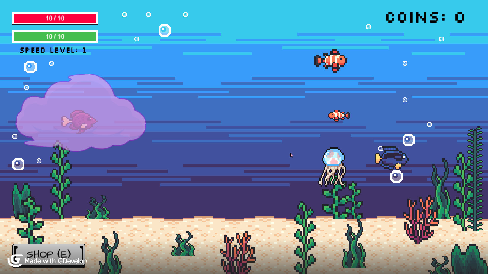
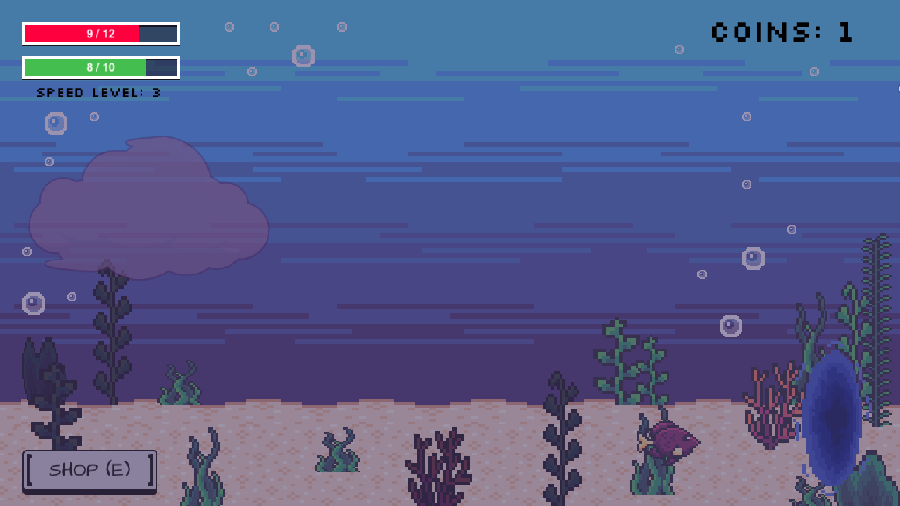
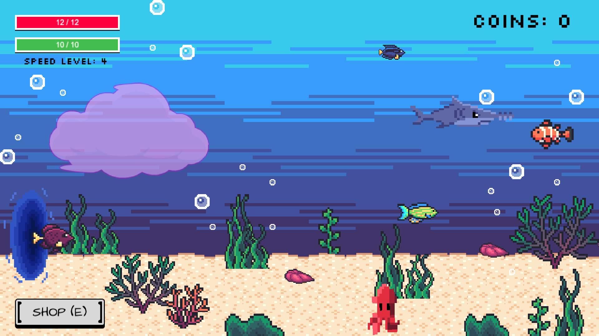
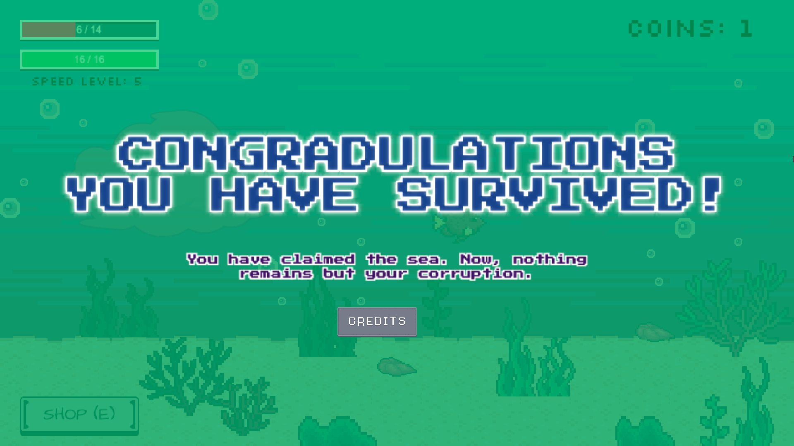
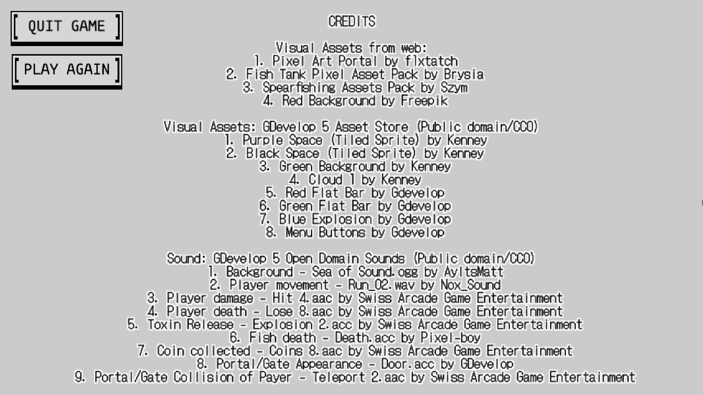
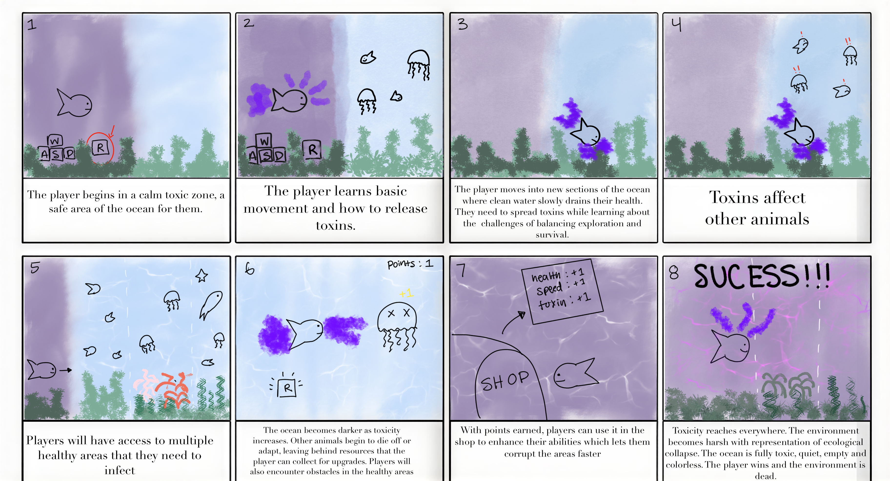
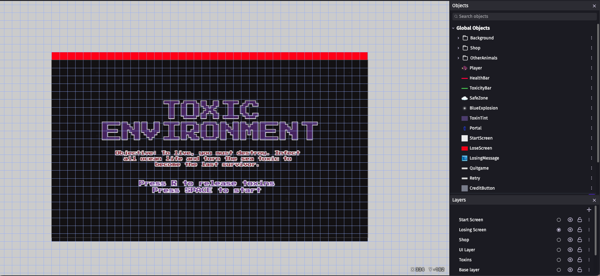
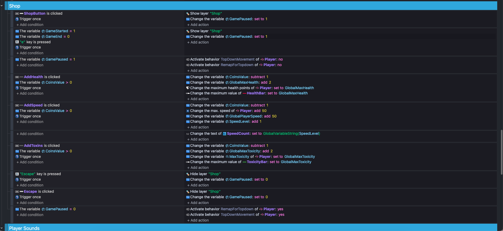

Toxic Environment
The collapse of an ecosystem caused by one creature’s need to survive






- Genre
- 2D Top-Down Survival
- Tools
- GDevelop
- Team
- 2-person project (with Alexander Flores)
- Role
- Gameplay Programmer, Designer, Playtester
overview
Toxic Environment is a 2D survival game about the collapse of an ecosystem caused by one creature's need to survive. Players control a toxic fish that must spread pollution throughout healthy ocean environments to maintain its own survival. By releasing toxins, players infect vegetation and marine animals, gradually transforming vibrant underwater environments into dark, lifeless spaces.
The game challenges traditional survival mechanics by making environmental destruction the player's primary objective. Players must explore healthy zones, manage their toxicity and health levels, eliminate other marine life to collect coins, and return to toxic safe zones to recover and purchase upgrades. As players progress, they must balance their own survival with the increasingly destructive consequences of their actions.gameplay video
design process
1. Prototype/Initial Ideas
To fit the theme 'release', we developed the idea of a survival game centered around a toxic fish living in an environment that was too healthy for it to survive comfortably. We wanted to reverse the traditional expectations of environmental games, where players are usually encouraged to protect nature. Instead, our player would need to pollute the environment to survive.
During the planning stage, we first created a story board to map out the different events in our game and the expected gameplay. With the storyboard we established the main gameplay loop: spread toxins, infect marine life, collect resources, return to the toxic safe zone, and purchase upgrades. We also planned the health and toxicity systems, which would encourage players to move between healthy and polluted areas.

As development progressed, we introduced marine animals that could be eliminated by releasing toxins. We also implemented a coin system and an upgrade shop, allowing players to exchange collected resources for improvements to their speed, health, and toxic abilities.
I worked on the visual development of the game, marine animal behavior, the start and end screens, and the coin and shop systems. I also implemented the player's speed upgrade and helped organize the game's progression between scenes.

2. Playtesting & changes
We conducted playtesting to understand how easily new players could understand the game's objective and mechanics. During the first playthrough, our tester was initially confused about the controls and the purpose of the surrounding marine animals. Based on this feedback, we introduced a starting screen explaining the objective and the R key toxin mechanic. We also worked on improving the game's progression, adding clearer instructions, and making the shop and upgrade systems more accessible.
The playtest also revealed that some upgrades were more useful than others, particularly the speed upgrade. This showed us that we needed to make the different upgrades more meaningful and balanced so that players had more reasons to experiment with the shop..

what i did
- Implemented interactions and behaviors for marine animals, including their movement and responses to toxin exposure.
- Designed and implemented the starting screen and ending screen to communicate the game's objective and progression.
- Implemented the resource collection system, allowing players to earn coins by eliminating marine animals.
- Implemented the resource collection system, allowing players to earn coins by eliminating marine animals.
- Developed the shop interface and purchasing logic, allowing players to spend collected coins on upgrades.
- Tested gameplay systems, identified issues with interactions and progression, and adjusted the implementation to improve the player experience.
what i learned
Developing Toxic Environment helped me gain a better understanding of game development, particularly how to use GDevelop's event system to create interactive gameplay mechanics. I learned how to implement object interactions, movement behaviors, collision detection, scene transitions, and variables that control different aspects of gameplay.
I also learned the importance of designing around the player's experience. Through playtesting, I realized that even if the mechanics function correctly, players might not immediately understand the objective or controls. Overall, this project helped me develop my programming, visual design, problem-solving, and playtesting skills. It also taught me how important it is to balance gameplay mechanics with the message and experience I want players to take away from a game.